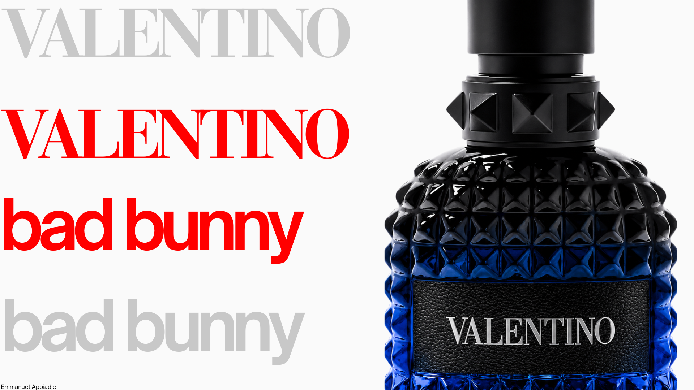

Born from the heat, worn without rules.

Santo Sol is a unisex fragrance collaboration between Bad Bunny and Valentino, inspired by the warmth, color, and energy of Puerto Rico — where refined luxury meets bold self-expression.
More than a celebrity fragrance, it's a personal expression of culture, memory, and confidence.